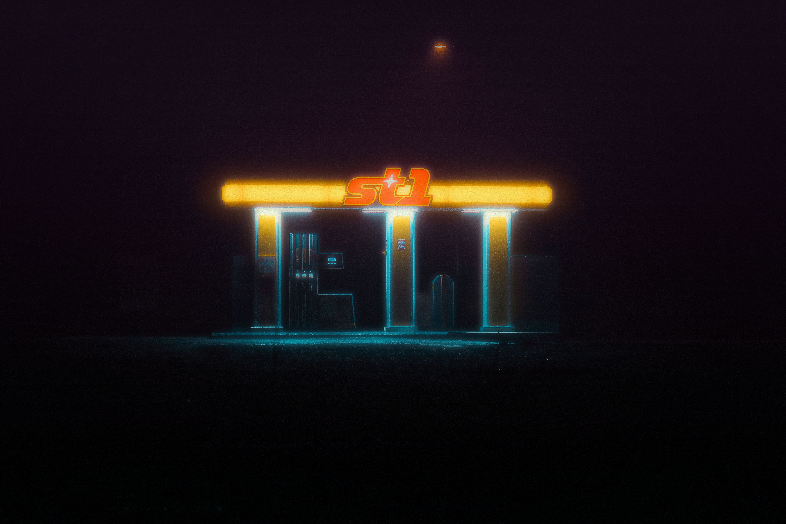

INDEPENDENT RADIO • ALTERNATIVE R&B • AFTER DARK
Welcome to After Hours Radio! Explore a collection of songs curated for late-night listening. Discover new artists, genres, and tracks that will keep you company during those quiet hours. Enjoy the music and let it set the mood for your night.

| Artist | Song | Release / Origin | Genre | Rating / Comments |
|---|---|---|---|---|
| pryme! | rmbr me | 2025 / USA | R&B / Contemporary R&B and Pop | 10/10 - Great late-night song. |
| Westwood, pryme! | Get There | 2026 / USA | Hyperpop, Hip-Hop, Alternative R&B | 10/10 - Love the bassline. |
| Notkyle | baby, lmk | 2025 / USA | R&B, Soul, Hip-Hop | 10/10 - Relaxing and smooth. |
| bixby | Distance | 2024 / USA | Pop, Dance Pop | 9/10 - Catchy and unique. |
| Joh! | youngboi | 2024 / USA | R&B/Soul, K-Indie | 10/10 - Amazing atmosphere. |
| germinie | Stay Right Here | 2026 / USA | Hip-Hop, Rap, R&B/Soul | 9/10 - Great production. |
| J.Tajor | Drive | 2025 / USA | R&B/Soul | 9/10 - Dreamy sound. |
| Christian Kuria | Deep Green | 2022 / USA | Alternative, Indie | 10/10 - Perfect for nighttime. |
| Celine Wanyi | Cosmic | 2025 / USA | Pop, R&B | 10/10 - Timeless track. |